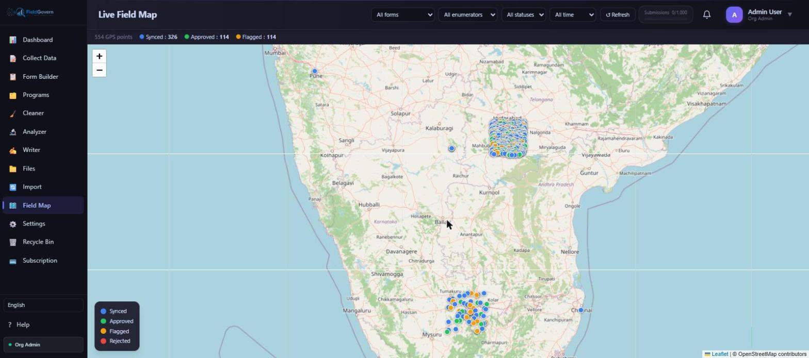
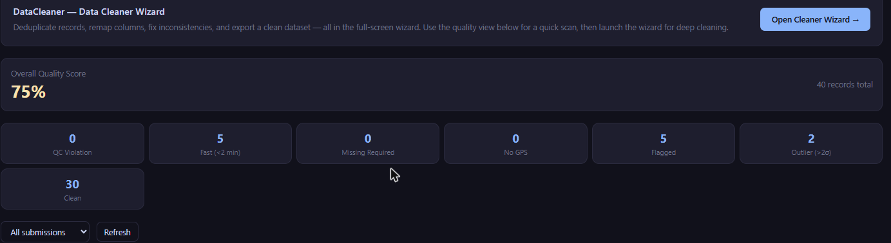

"Curb-stoning" gets its name from an enumerator who, rather than walking the assigned route and knocking on doors, sits on a curb and fills out the questionnaire from imagination — sometimes lightly informed by a real conversation with one or two actual respondents, sometimes not. It is one of the oldest problems in survey research, predating computers entirely, but digital data collection has changed both how it happens and how it gets caught. An enumerator with a tablet leaves a much richer trail than one with a paper form: timestamps down to the second, GPS coordinates, time-on-question metadata, and a server log of exactly when each submission arrived. The tools to catch fraud have improved as fast as the incentive to commit it has stayed the same — enumerators are usually paid per completed interview, which creates a direct financial incentive to fabricate when a village is hard to reach, a respondent is hostile, or a deadline is looming.
This is not a reason to distrust your field team by default. The overwhelming majority of enumerators do the work honestly, often under genuinely difficult conditions — heat, distance, uncooperative respondents, unpaid overtime to hit a quota. But a monitoring system that assumes good faith and does nothing to verify it is a system that will eventually get exploited, and when it does, the cost isn't just the fabricated interviews — it's every finding built on top of them.
Red flags: what fabricated data actually looks like
Implausibly fast completion times
A genuine household survey with 40–60 questions, informed consent, and some probing on open-ended items rarely completes in under four or five minutes, even for a fast, experienced enumerator with a cooperative respondent. Submissions clustering under two minutes are the single strongest quantitative signal of fabrication — nobody reads a consent script, asks about household composition, and probes an open-ended livelihood question in ninety seconds.
Suspiciously clustered or repeated GPS points
A fabricating enumerator often doesn't leave their house, a tea stall, or a single convenient spot on the survey route. The tell is a cluster of submissions with near-identical GPS coordinates — sometimes within a few metres of each other — across respondents who are supposed to be different households scattered across a village. Genuine door-to-door interviewing produces visibly scattered points across the settlement; fabricated data produces a tight knot.
Identical or near-identical answer patterns
Fabricating plausible-sounding answers for one interview is easy. Doing it forty times with enough natural variation to look like forty different households is hard — most people default to reusing the same convenient answers, so income figures round to the same number, household sizes repeat, and open-ended responses paraphrase each other closely. A statistical similarity check across an enumerator's submissions — not just exact duplicates, but answer-pattern correlation — catches this even when no two records are byte-for-byte identical.
Submissions outside assigned working hours
A submission timestamped at 11:40 PM, or on a day the enumerator wasn't scheduled to be in that village, doesn't prove fraud on its own — there are legitimate reasons (a late sync from an area with no signal earlier in the day, a genuinely long interview that ran past dark). But it's a flag worth checking against the field schedule, especially when it recurs for the same enumerator.
Detection methods that actually work
Duplicate and near-duplicate detection on key fields
Run a similarity check across respondent name, age, household composition, and a handful of substantive answers for every enumerator's submission batch. Exact duplicates are trivial to catch; near-duplicates (same respondent details, slightly different answers, submitted a day apart) usually indicate either a genuine re-interview that wasn't supposed to happen or a fabricator reusing a template with light edits.
GPS clustering analysis
Plot every enumerator's submissions on a map and look at the spatial spread. A field team working a real village produces a scattered, organic pattern that roughly follows the settlement's actual footprint — streets, clusters of houses, the occasional outlier at a far edge of the assigned area. A tight cluster, a suspiciously perfect grid, or a string of points along a single road with no deviation are all patterns worth a closer look.

This is exactly the kind of check that's fast on a map and slow in a spreadsheet of decimal coordinates — a supervisor scanning a live field map with Synced/Approved/Flagged status overlays can spot an unnatural cluster in seconds, where the equivalent would take an analyst twenty minutes of pivot tables to notice.
Back-check and spot-check protocols
The gold-standard defense against fabrication isn't statistical at all — it's re-contact. A back-check protocol assigns a fixed percentage of each enumerator's completed submissions (commonly 5–10% for a standard survey, higher for higher-stakes RCT or baseline work) to a supervisor or a separate verification team, who re-visit or phone the respondent to confirm the interview actually happened and spot-check a handful of key answers for consistency. This single practice, applied consistently and known to exist by the field team, does more to prevent fabrication than any amount of after-the-fact statistical detection — the deterrent effect of knowing 1 in 10 interviews might be checked changes enumerator behavior directly.
Automated flagging as a first filter
None of the above scales to manual review of every submission on a large survey. The practical approach is a two-tier system: automated checks (fast submissions, GPS clustering, answer-pattern similarity, outlier values) flag a subset of records automatically, and supervisors focus their limited back-check capacity on that flagged subset plus a random sample of the rest — so genuine fraud doesn't hide simply by staying statistically unremarkable.

Response protocol: what to do when you find something
Detection without a defined response is just anxiety. Every field project should have an agreed escalation path before fieldwork starts, so a supervisor who spots a red flag knows exactly what happens next rather than making an ad hoc call under pressure.
| Step | Action | Owner |
|---|---|---|
| 1. Flag | Automated check or manual observation marks a submission or enumerator pattern for review | System / Field Supervisor |
| 2. Supervisor review | Review the flagged record(s) against the enumerator's day plan, GPS trail, and timing; rule out benign explanations | Field Supervisor |
| 3. Back-check | Re-contact the respondent by phone or in person to confirm the interview occurred and verify 3-5 key answers | Supervisor or independent QC team |
| 4. Escalate or retrain | If confirmed genuine: no action needed, close the flag. If inconclusive: retraining and closer monitoring. If confirmed fabricated: remove the enumerator's affected batch, formal escalation per project policy | Project Manager / M&E Lead |
Whatever the outcome, keep a written record of what was flagged, what the back-check found, and what action was taken. This protects honest enumerators from unfounded suspicion just as much as it protects data integrity — and it's the record you'll need if a donor or government client later asks how quality was assured.
Why fraud incentives exist — and how survey design can reduce them
Detection and back-checks treat fraud as something to catch. It's worth spending equal attention on why it happens in the first place, because a survey designed around the wrong incentives will keep producing fabrication no matter how good the detection gets. Three design choices matter most.
Realistic daily targets
An enumerator assigned twelve full household interviews in a single day, in a district where travel between households eats two hours and each genuine interview takes forty minutes, is being set an arithmetic target that doesn't fit inside a working day. When the honest path is structurally impossible, some fraction of the team will take the dishonest one rather than simply fail the target and lose pay. Setting targets based on a realistic field-tested pace — not a desk estimate — removes this pressure before it starts.
Pay structure that doesn't reward volume alone
Strict per-interview payment, with no quality component, pays exactly the same for a genuine forty-minute interview and a fabricated ninety-second one. Blending a base rate with a quality-linked component — tied to back-check pass rates rather than raw interview count — changes what "doing well" means for the enumerator, without requiring the base pay to change.
Achievable, well-scoped routes
Assigning an enumerator a genuinely difficult, spread-out, or hard-to-reach route with the same expectations as an easy, compact one produces predictable pressure. Route planning that accounts for terrain, distance, and respondent availability — rather than dividing a target list evenly by headcount — removes one more reason to cut corners.
A note on false positives
Not every flagged pattern is fraud, and treating every flag as an accusation damages trust with an honest field team faster than fraud itself damages the dataset. A genuinely fast submission can happen — a short household with a cooperative, articulate respondent and a straightforward form can legitimately finish in three minutes. GPS clustering can occur naturally in dense urban settlements where houses genuinely sit a few metres apart. Identical answer patterns can arise from a homogenous community where most households really do share the same occupation, income bracket, and family size.
The response protocol exists precisely to separate these benign explanations from real problems through a proportionate, evidence-based review — a phone call or brief follow-up visit — rather than an assumption of guilt from a statistical flag alone. Supervisors should be trained to treat a flag as a question ("does this hold up?") rather than a verdict, and enumerators should understand that being flagged and being cleared is a normal, expected outcome for a fraction of any team's submissions, not a mark against them.
The cost of undetected fraud
It's worth being concrete about why this matters beyond data hygiene. A fabricated interview doesn't just produce one bad row — it distorts every statistic computed from the sample it's part of: means, proportions, cross-tabs, and any comparison between groups or over time. In a baseline-endline design or an RCT, fabricated baseline data can mask or exaggerate a genuine program effect at endline, because the comparison point itself was never real. In donor and government reporting, a discovered fabrication pattern after a report has already been submitted is far more damaging — to credibility and to future funding — than the cost of a back-check program would ever have been. Detection is cheap relative to the alternative; it just has to happen while the data can still be corrected, not after the report has shipped.
Building this into the survey design, not bolting it on after
The teams that catch fraud reliably are the ones who design for it from the start, not the ones who go looking after the fact when a result looks implausible. That means: setting a minimum-plausible-duration threshold per form before fieldwork begins, requiring GPS capture as a mandatory field rather than optional, building the back-check sample size into the fieldwork budget and timeline from day one, and briefing the field team openly that spot-checks happen — not as a threat, but as a standard, expected part of quality assurance that protects everyone's work.
None of this replaces good enumerator training and fair working conditions — an enumerator asked to complete an unrealistic number of interviews per day, or paid so little that a fabricated interview and a real one earn the same amount, faces exactly the pressure that produces curb-stoning in the first place. Detection catches problems; reasonable targets, fair pay, and good training prevent most of them from occurring.
Catch fraud before it reaches your dataset
FieldGovern's Field Map plots every submission's GPS in real time, and the Cleaner module auto-flags fast, duplicate, and outlier records — so supervisors know exactly where to spot-check.
Start Free Trial